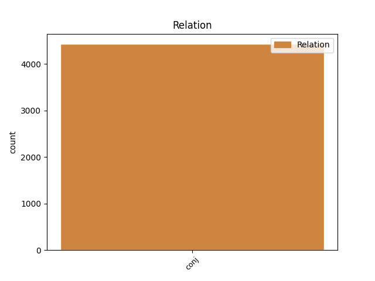
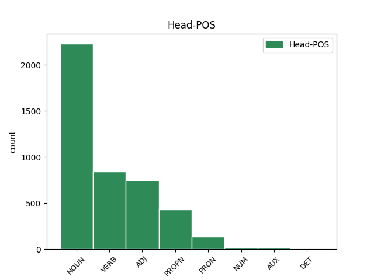
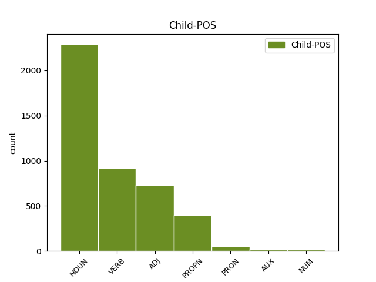

Distribution of features within this leaf



Agreement Rules sorted by frequency.
- When the dependent token is the conjunct(conj) of the head token, and the dependent token is NOUN.
1 καὶ _ _ _ _ 0 _ _ _
2 τὸ _ _ _ _ 0 _ _ _
3 πνεῦμα πνεῦμα NOUN Nb Case=Nom|Gender=Neut|Number=Sing 0 _ _ _
4 καὶ _ _ _ _ 0 _ _ _
5 ἡ _ _ _ _ 0 _ _ _
6 νύμφη νύμφη NOUN Nb Case=Nom|Gender=Fem|Number=Sing 3 conj _ ref=REV_22.17
7 λέγουσιν _ _ _ _ 0 _ _ _
1 ἔξω _ _ _ _ 0 _ _ _
2 οἱ _ _ _ _ 0 _ _ _
3 κύνες _ _ _ _ 0 _ _ _
4 καὶ _ _ _ _ 0 _ _ _
5 οἱ _ _ _ _ 0 _ _ _
6 φάρμακοι _ _ _ _ 0 _ _ _
7 καὶ _ _ _ _ 0 _ _ _
8 οἱ _ _ _ _ 0 _ _ _
9 πόρνοι _ _ _ _ 0 _ _ _
10 καὶ _ _ _ _ 0 _ _ _
11 οἱ _ _ _ _ 0 _ _ _
12 φονεῖς _ _ _ _ 0 _ _ _
13 καὶ _ _ _ _ 0 _ _ _
14 οἱ _ _ _ _ 0 _ _ _
15 εἰδωλολάτραι _ _ _ _ 0 _ _ _
16 καὶ _ _ _ _ 0 _ _ _
17 πᾶς _ _ _ _ 0 _ _ _
18 ποιῶν ποιέω VERB V- Case=Nom|Gender=Masc|Number=Sing|Tense=Pres|VerbForm=Part|Voice=Act 0 _ _ _
19 καὶ _ _ _ _ 0 _ _ _
20 φιλῶν φιλέω VERB V- Case=Nom|Gender=Masc|Number=Sing|Tense=Pres|VerbForm=Part|Voice=Act 18 conj _ ref=REV_22.15
21 ψεῦδος _ _ _ _ 0 _ _ _
1 ἐγὼ _ _ _ _ 0 _ _ _
2 τὸ _ _ _ _ 0 _ _ _
3 ἄλφα _ _ _ _ 0 _ _ _
4 καὶ _ _ _ _ 0 _ _ _
5 τὸ _ _ _ _ 0 _ _ _
6 ω _ _ _ _ 0 _ _ _
7 ὁ _ _ _ _ 0 _ _ _
8 πρῶτος πρῶτος ADJ Mo Case=Nom|Gender=Masc|Number=Sing 0 _ _ _
9 καὶ _ _ _ _ 0 _ _ _
10 ὁ _ _ _ _ 0 _ _ _
11 ἔσχατος ἔσχατος ADJ A- Case=Nom|Degree=Pos|Gender=Masc|Number=Sing 8 conj _ ref=REV_22.13
12 ἡ _ _ _ _ 0 _ _ _
13 ἀρχὴ _ _ _ _ 0 _ _ _
14 καὶ _ _ _ _ 0 _ _ _
15 τὸ _ _ _ _ 0 _ _ _
16 τέλος _ _ _ _ 0 _ _ _
1 καὶ _ _ _ _ 0 _ _ _
2 ὁ _ _ _ _ 0 _ _ _
3 θάνατος θάνατος NOUN Nb Case=Nom|Gender=Masc|Number=Sing 0 _ _ _
4 καὶ _ _ _ _ 0 _ _ _
5 ὁ _ _ _ _ 0 _ _ _
6 ᾅδης Ἅιδης PROPN Ne Case=Nom|Gender=Masc|Number=Sing 3 conj _ ref=REV_20.14
7 ἐβλήθησαν _ _ _ _ 0 _ _ _
8 εἰς _ _ _ _ 0 _ _ _
9 τὴν _ _ _ _ 0 _ _ _
10 λίμνην _ _ _ _ 0 _ _ _
11 τοῦ _ _ _ _ 0 _ _ _
12 πυρός _ _ _ _ 0 _ _ _
1 οἷς _ _ _ _ 0 _ _ _
2 ἀπεκαλύφθη _ _ _ _ 0 _ _ _
3 ὅτι _ _ _ _ 0 _ _ _
4 οὐχ _ _ _ _ 0 _ _ _
5 ἑαυτοῖς ἑαυτοῦ PRON Pk Case=Dat|Gender=Masc|Number=Plur|Person=3|PronType=Prs|Reflex=Yes 0 _ _ _
6 ὑμῖν ὑμεῖς PRON Pp Case=Dat|Gender=Masc|Number=Plur|Person=2|PronType=Prs 5 conj _ ref=1PET_1.12
7 δὲ _ _ _ _ 0 _ _ _
8 διηκόνουν _ _ _ _ 0 _ _ _
9 αὐτά _ _ _ _ 0 _ _ _
10 ἃ _ _ _ _ 0 _ _ _
11 νῦν _ _ _ _ 0 _ _ _
12 ἀνηγγέλη _ _ _ _ 0 _ _ _
13 ὑμῖν _ _ _ _ 0 _ _ _
14 διὰ _ _ _ _ 0 _ _ _
15 τῶν _ _ _ _ 0 _ _ _
16 εὐαγγελισαμένων _ _ _ _ 0 _ _ _
17 ὑμᾶς _ _ _ _ 0 _ _ _
18 ἐν _ _ _ _ 0 _ _ _
19 πνεύματι _ _ _ _ 0 _ _ _
20 ἁγίῳ _ _ _ _ 0 _ _ _
21 ἀποσταλέντι _ _ _ _ 0 _ _ _
22 ἀπ’ _ _ _ _ 0 _ _ _
23 οὐρανοῦ _ _ _ _ 0 _ _ _
24 εἰς _ _ _ _ 0 _ _ _
25 ἃ _ _ _ _ 0 _ _ _
26 ἐπιθυμοῦσιν _ _ _ _ 0 _ _ _
27 ἄγγελοι _ _ _ _ 0 _ _ _
28 παρακύψαι _ _ _ _ 0 _ _ _
1 ἀθετήσας _ _ _ _ 0 _ _ _
2 τις _ _ _ _ 0 _ _ _
3 νόμον _ _ _ _ 0 _ _ _
4 Μωϋσέως _ _ _ _ 0 _ _ _
5 χωρὶς _ _ _ _ 0 _ _ _
6 οἰκτιρμῶν _ _ _ _ 0 _ _ _
7 ἐπὶ _ _ _ _ 0 _ _ _
8 δυσὶν δύο NUM Ma Case=Dat|Number=Plur 0 _ _ _
9 ἢ _ _ _ _ 0 _ _ _
10 τρισὶν τρεῖς NUM Ma Case=Dat|Number=Plur 8 conj _ ref=HEB_10.28
11 μάρτυσιν _ _ _ _ 0 _ _ _
12 ἀποθνῄσκει _ _ _ _ 0 _ _ _
1 ἱκανοῦ _ _ _ _ 0 _ _ _
2 δὲ _ _ _ _ 0 _ _ _
3 χρόνου _ _ _ _ 0 _ _ _
4 διαγενομένου διαγίγνομαι VERB V- Aspect=Perf|Case=Gen|Gender=Masc|Number=Sing|Tense=Past|VerbForm=Part|Voice=Mid 0 _ _ _
5 καὶ _ _ _ _ 0 _ _ _
6 ὄντος εἰμί AUX V- Case=Gen|Gender=Masc|Number=Sing|Tense=Pres|VerbForm=Part|Voice=Act 4 conj _ LId=1|ref=ACTS_27.9
7 ἤδη _ _ _ _ 0 _ _ _
8 ἐπισφαλοῦς _ _ _ _ 0 _ _ _
9 τοῦ _ _ _ _ 0 _ _ _
10 πλοὸς _ _ _ _ 0 _ _ _
11 διὰ _ _ _ _ 0 _ _ _
12 τὸ _ _ _ _ 0 _ _ _
13 καὶ _ _ _ _ 0 _ _ _
14 τὴν _ _ _ _ 0 _ _ _
15 νηστείαν _ _ _ _ 0 _ _ _
16 ἤδη _ _ _ _ 0 _ _ _
17 παρεληλυθέναι _ _ _ _ 0 _ _ _
18 παρῄνει _ _ _ _ 0 _ _ _
19 ὁ _ _ _ _ 0 _ _ _
20 Παῦλος _ _ _ _ 0 _ _ _
21 λέγων _ _ _ _ 0 _ _ _
22 αὐτοῖς _ _ _ _ 0 _ _ _
Disagree Examples:
1 πέμπτῃ πέμπτος ADJ Mo Case=Dat|Gender=Fem|Number=Sing 0 _ _ _
2 δὲ _ _ _ _ 0 _ _ _
3 ἢ _ _ _ _ 0 _ _ _
4 ἕκτῃ ἕκτος ADJ Mo Case=Nom|Gender=Fem|Number=Sing 1 conj _ ref=1.1.3
5 ἡμέρῃ _ _ _ _ 0 _ _ _
6 ἀπ’ _ _ _ _ 0 _ _ _
7 ἧς _ _ _ _ 0 _ _ _
8 ἀπίκοντο _ _ _ _ 0 _ _ _
9 ἐξεμπολημένων _ _ _ _ 0 _ _ _
10 σφι _ _ _ _ 0 _ _ _
11 σχεδόν _ _ _ _ 0 _ _ _
12 πάντων _ _ _ _ 0 _ _ _
13 ἐλθεῖν _ _ _ _ 0 _ _ _
14 ἐπὶ _ _ _ _ 0 _ _ _
15 τὴν _ _ _ _ 0 _ _ _
16 θάλασσαν _ _ _ _ 0 _ _ _
17 γυναῖκας _ _ _ _ 0 _ _ _
18 ἄλλας _ _ _ _ 0 _ _ _
19 τε _ _ _ _ 0 _ _ _
20 πολλάς _ _ _ _ 0 _ _ _
21 καὶ _ _ _ _ 0 _ _ _
22 δὴ _ _ _ _ 0 _ _ _
23 καὶ _ _ _ _ 0 _ _ _
24 τοῦ _ _ _ _ 0 _ _ _
25 βασιλέος _ _ _ _ 0 _ _ _
26 θυγατέρα _ _ _ _ 0 _ _ _
1 τὸ _ _ _ _ 0 _ _ _
2 μέν _ _ _ _ 0 _ _ _
3 νυν _ _ _ _ 0 _ _ _
4 ἁρπάζειν _ _ _ _ 0 _ _ _
5 γυναῖκας _ _ _ _ 0 _ _ _
6 ἀνδρῶν _ _ _ _ 0 _ _ _
7 ἀδίκων _ _ _ _ 0 _ _ _
8 νομίζειν _ _ _ _ 0 _ _ _
9 ἔργον ἔργον NOUN Nb Case=Acc|Gender=Neut|Number=Sing 0 _ _ _
10 εἶναι _ _ _ _ 0 _ _ _
11 τὸ _ _ _ _ 0 _ _ _
12 δὲ _ _ _ _ 0 _ _ _
13 ἁρπασθεισέων _ _ _ _ 0 _ _ _
14 σπουδήν _ _ _ _ 0 _ _ _
15 ποιήσασθαι _ _ _ _ 0 _ _ _
16 τιμωρέειν _ _ _ _ 0 _ _ _
17 ἀνοήτων ἀνόητος ADJ A- Case=Gen|Degree=Pos|Gender=Masc|Number=Plur 9 conj _ ref=1.4.2
18 τὸ _ _ _ _ 0 _ _ _
19 δὲ _ _ _ _ 0 _ _ _
20 μηδεμίαν _ _ _ _ 0 _ _ _
21 ὤρην _ _ _ _ 0 _ _ _
22 ἔχειν _ _ _ _ 0 _ _ _
23 ἁρπασθεισέων _ _ _ _ 0 _ _ _
24 σωφρόνων _ _ _ _ 0 _ _ _
1 τὸ _ _ _ _ 0 _ _ _
2 μέν _ _ _ _ 0 _ _ _
3 νυν _ _ _ _ 0 _ _ _
4 ἁρπάζειν _ _ _ _ 0 _ _ _
5 γυναῖκας _ _ _ _ 0 _ _ _
6 ἀνδρῶν _ _ _ _ 0 _ _ _
7 ἀδίκων _ _ _ _ 0 _ _ _
8 νομίζειν _ _ _ _ 0 _ _ _
9 ἔργον _ _ _ _ 0 _ _ _
10 εἶναι _ _ _ _ 0 _ _ _
11 τὸ _ _ _ _ 0 _ _ _
12 δὲ _ _ _ _ 0 _ _ _
13 ἁρπασθεισέων _ _ _ _ 0 _ _ _
14 σπουδήν _ _ _ _ 0 _ _ _
15 ποιήσασθαι _ _ _ _ 0 _ _ _
16 τιμωρέειν _ _ _ _ 0 _ _ _
17 ἀνοήτων ἀνόητος ADJ A- Case=Gen|Degree=Pos|Gender=Masc|Number=Plur 0 _ _ _
18 τὸ _ _ _ _ 0 _ _ _
19 δὲ _ _ _ _ 0 _ _ _
20 μηδεμίαν _ _ _ _ 0 _ _ _
21 ὤρην _ _ _ _ 0 _ _ _
22 ἔχειν _ _ _ _ 0 _ _ _
23 ἁρπασθεισέων _ _ _ _ 0 _ _ _
24 σωφρόνων σωφρονέω VERB V- Case=Nom|Gender=Masc|Number=Sing|Tense=Pres|VerbForm=Part|Voice=Act 17 conj _ ref=1.4.2
1 τὴν _ _ _ _ 0 _ _ _
2 δὲ _ _ _ _ 0 _ _ _
3 Εὐρώπην Εὐρώπη PROPN Ne Case=Acc|Gender=Fem|Number=Sing 0 _ _ _
4 καὶ _ _ _ _ 0 _ _ _
5 τὸ _ _ _ _ 0 _ _ _
6 Ἑλληνικόν Ἑλληνικός ADJ A- Case=Nom|Degree=Pos|Gender=Neut|Number=Sing 3 conj _ ref=1.4.4
7 ἥγηνται _ _ _ _ 0 _ _ _
8 κεχωρίσθαι _ _ _ _ 0 _ _ _
1 περιημεκτέων _ _ _ _ 0 _ _ _
2 δὲ _ _ _ _ 0 _ _ _
3 τῇ _ _ _ _ 0 _ _ _
4 συμφορῇ _ _ _ _ 0 _ _ _
5 δεινῶς _ _ _ _ 0 _ _ _
6 ἐκάλεε _ _ _ _ 0 _ _ _
7 μὲν _ _ _ _ 0 _ _ _
8 Δία _ _ _ _ 0 _ _ _
9 καθάρσιον _ _ _ _ 0 _ _ _
10 μαρτυρόμενος _ _ _ _ 0 _ _ _
11 τὰ _ _ _ _ 0 _ _ _
12 ὑπὸ _ _ _ _ 0 _ _ _
13 τοῦ _ _ _ _ 0 _ _ _
14 ξείνου _ _ _ _ 0 _ _ _
15 πεπονθὼς _ _ _ _ 0 _ _ _
16 εἴη _ _ _ _ 0 _ _ _
17 ἐκάλεε _ _ _ _ 0 _ _ _
18 δὲ _ _ _ _ 0 _ _ _
19 ἐπίστιόν _ _ _ _ 0 _ _ _
20 τε _ _ _ _ 0 _ _ _
21 καὶ _ _ _ _ 0 _ _ _
22 ἑταιρήιον _ _ _ _ 0 _ _ _
23 τὸν _ _ _ _ 0 _ _ _
24 αὐτὸν _ _ _ _ 0 _ _ _
25 τοῦτον _ _ _ _ 0 _ _ _
26 ὀνομάζων _ _ _ _ 0 _ _ _
27 θεόν _ _ _ _ 0 _ _ _
28 τὸν _ _ _ _ 0 _ _ _
29 μὲν _ _ _ _ 0 _ _ _
30 ἐπίστιον _ _ _ _ 0 _ _ _
31 καλέων καλέω VERB V- Case=Nom|Gender=Masc|Number=Sing|Tense=Pres|VerbForm=Part|Voice=Act 0 _ _ _
32 διότι _ _ _ _ 0 _ _ _
33 δὴ _ _ _ _ 0 _ _ _
34 οἰκίοισι _ _ _ _ 0 _ _ _
35 ὑποδεξάμενος _ _ _ _ 0 _ _ _
36 τὸν _ _ _ _ 0 _ _ _
37 ξεῖνον _ _ _ _ 0 _ _ _
38 φονέα _ _ _ _ 0 _ _ _
39 τοῦ _ _ _ _ 0 _ _ _
40 παιδὸς _ _ _ _ 0 _ _ _
41 ἐλάνθανε _ _ _ _ 0 _ _ _
42 βόσκων _ _ _ _ 0 _ _ _
43 τὸν _ _ _ _ 0 _ _ _
44 δὲ _ _ _ _ 0 _ _ _
45 ἑταιρήιον ἑταιρεῖος ADJ A- Case=Acc|Degree=Pos|Gender=Masc|Number=Sing 31 conj _ ref=1.44.2
46 ὡς _ _ _ _ 0 _ _ _
47 φύλακα _ _ _ _ 0 _ _ _
48 συμπέμψας _ _ _ _ 0 _ _ _
49 αὐτὸν _ _ _ _ 0 _ _ _
50 εὑρήκοι _ _ _ _ 0 _ _ _
51 πολεμιώτατον _ _ _ _ 0 _ _ _